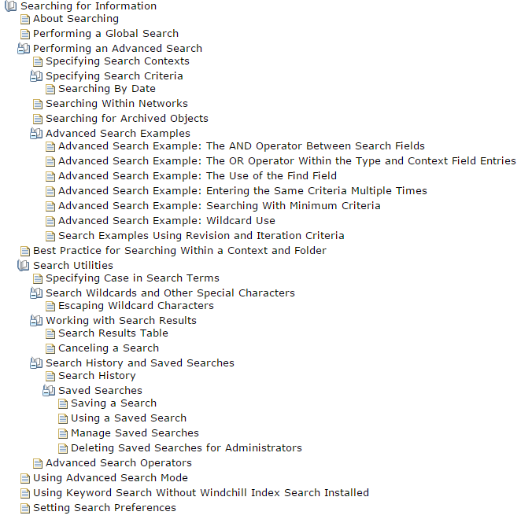
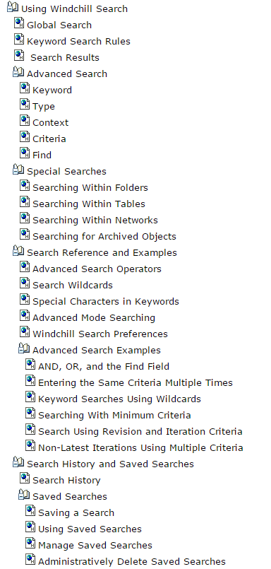
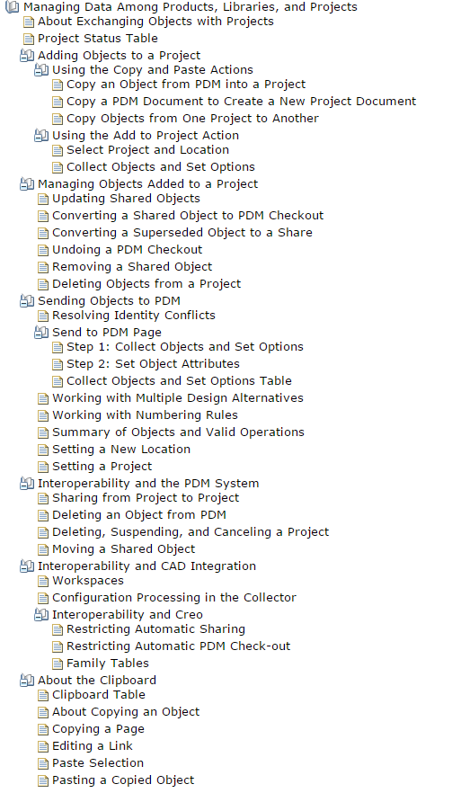
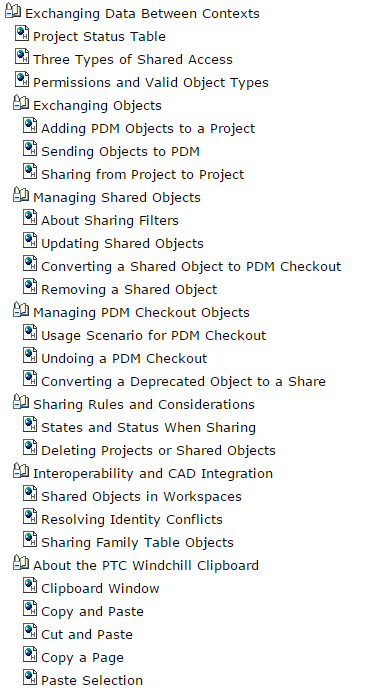

PacketFabric developed a Terraform provider. I wrote the general/intro documentation as well as helped document the schema for the resources.
TOOLS: Markdown, tfplugindocs
See it here: PacketFabric Provider
Before I built this tool, we were maintaining a 36-page Word file with hardware specifications. When a customer requested a quote for their specific environment, an engineer would create a copy of the Word file and customize it accordingly.
This selection tool serves two purposes: 1) to provide information in a user-friendly way, and 2) as a tool to generate professional, customized PDFs that can be delivered to customers.
NOTE: In this demo version, all internal information, including product names, has been altered.
TOOLS: MindTouch, jsPDF, jsPDF-AutoTable, and multiselect.js
This is a thorough, but very, very informal guide I put together for the writers on my team. I had created templates linked to their user IDs, which would allow them to create their own custom tools and CSS to use in our CMS.
I have the PDF available here, but due to the formatting, it is more readable on the live page.
These are instructions on how to run a script I wrote. The script is for the other tech writers on my team, and its purpose is to help automate some localization tasks we had to complete at every release.
I would often spend time in the customer forums to get a better sense of what our users were struggling with, and whether the documentation could assist. When possible, I would also provide direct support.
Technical documentation is typically pieced together over the years by various authors and editors. As a result, we're often left with a disorganized content structure.
One of the first things I do when assuming responsibility for new content is to evaluate its TOC and determine what I can do to make it easier to navigate.



